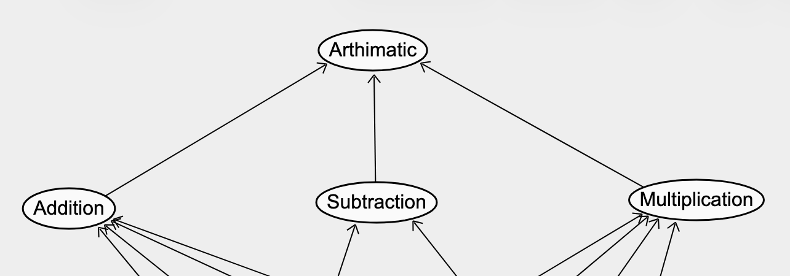

| Q Matrix | |||
| Item | Addition | Subtraction | Multiplication |
|---|---|---|---|
| 2 + 3 | 1 | 0 | 0 |
| 2 + 3 - 1 | 1 | 1 | 0 |
| 3 x 2 | 0 | 0 | 1 |
| 10(6 + 2) | 1 | 0 | 1 |
| (4 + 5) + 2(10 - 7) | 1 | 1 | 1 |
| 2(5) | 0 | 0 | 1 |
Introduction to Bayesian Analyses & Stan
By Examining Student Proficiency on Statistical Concepts
2026-02-11
My Useful Resource(s)
I found the Distribution Explorer site and have been using it constantly
Constant need for visualizing distributions
- Priors
Dagitty for building Directed Acyclic Graphs (DAGs)

Before We Actually Begin
This is a quick dive into Diagnostic Classification Models (DCM) and Item Response Theory (IRT) models
- There is vast world of psychometric models, including Mixture IRT models, Multidimensional IRT (more than 1 latent skill), IRT Factor Analysis (polychoric correlation matrix)
I’ll provide enough information to follow along and share a little about models I think are interesting to use
Really interested in the design/questions to ask students
Please Move on JP, We’re Tired

Structural/Proficiency Model
Skills are not Classes
Skills are shown visually
We can think of classes as the combination of the skills (e.g., 000, 111, etc.)
For most DCMs, the two most common structural models are unconstrained or independent
Unconstrained –> We allow attributes to be correlated
Independent –> Belief that attributes are not correlated
| Q Matrix | |||
| Item | Addition | Subtraction | Multiplication |
|---|---|---|---|
| 2 + 3 | 1 | 0 | 0 |
| 2 + 3 - 1 | 1 | 1 | 0 |
| 3 x 2 | 0 | 0 | 1 |
| 10(6 + 2) | 1 | 0 | 1 |
| (4 + 5) + 2(10 - 7) | 1 | 1 | 1 |
| 2(5) | 0 | 0 | 1 |

Psss…There Are Other Structural Models
There can be hierarchies between skills (Hiearchical DCM)
- All the skills in our Q-matrix are related to arithmetic

- We might think students learn addition –> Subtraction –> Multiplication (linear)

Let’s Talk About Stan
Stan is judgey
He does not like discrete parameters
- Especially latent parameters
It gets him so upset, he starts breaking things
We try our hardest to be on Stan’s good side
Stan also loves the log scale, so we will have to make changes sometimes

Plotting Helps Everything (True Positives/No Slipping)

More Prior vs Posterior Plots (Guessing)

What Class Did Students Probabilistically Belong To

What About Attribute Mastery Per Student

Bayesian Posterior Predictive p-values

Bayesian PPP values

Guessing/Slipping

Now We Can Look At Classes & Items They Got Correct

Attribute Proficiency